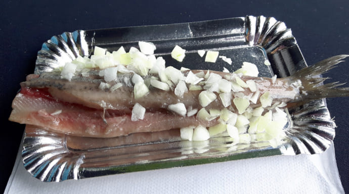

1. Harling（ハーリング）

ハーリングとは、ニシンを軽く塩漬けし、発酵させたものに玉ねぎのみじん切りをかけて食べる料理です。食べ歩きに適したもので、伝統的な食べ方があります。それは、尾びれをつかんで、顔の近くにそれを掲げ、上から下にニシンを口に入れるという食べ方です。ただ、この食べ方ができない場合、大体お店の方がそれを一口サイズに切ってくれます。
価格:一匹約2～3ユーロ（約320円～480円）